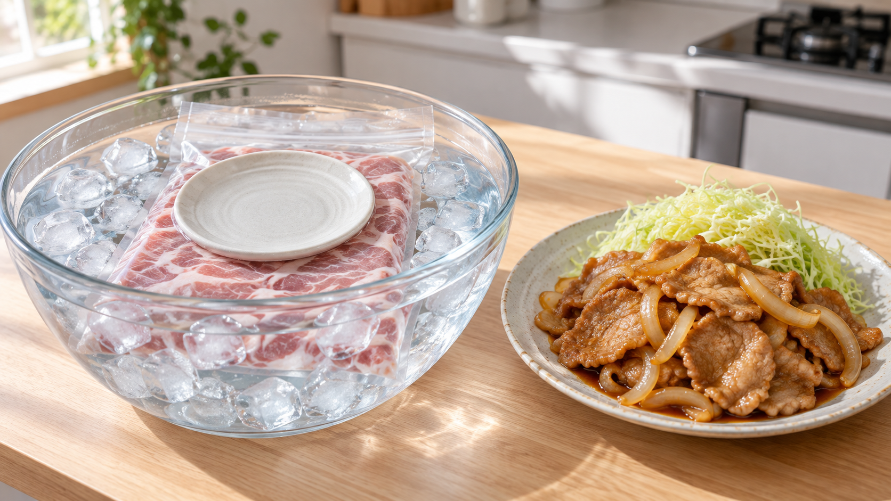

急ぐ日は氷水、予定が立つ日は冷蔵庫。解凍は「温度」より熱の渡し方で変わる
夕食を作ろうとして、冷凍庫の肉がかたまりのままだと気づく。
冷蔵庫へ移せば安心そうだが、今夜には間に合わない。だからといって、室温へ置いたり、ぬるま湯へ沈めたりするのは避けたい。
こんな日は、氷水が使える。
氷水は冷蔵庫の中より冷たいのに、薄く凍らせた肉なら早く解凍できる。違いを作るのは温度の高さではなく、食材の表面へ熱をどれだけ途切れずに渡せるかだ。
今日の結論
今すぐ調理するなら氷水、翌日以降に使うなら冷蔵庫と考えると分かりやすい。
氷水は、袋の表面全体へ水が密着し、周りの水が動いて入れ替わるため、冷蔵庫の静かな空気より熱を渡しやすい。冷蔵庫は時間がかかる代わりに、低い温度を保ったまま放っておける。
どちらが上という話ではない。氷水は「短時間で解凍して、そのまま調理する方法」。冷蔵庫は「時間を味方につけ、調理時刻に余裕を持たせる方法」だ。
氷水が冷蔵庫より早いのは、水が表面へ触れ続けるから
凍った肉を解凍するには、外から熱を受け取り、肉の中の氷を水へ戻す必要がある。
冷蔵庫では、肉を包むのは空気だ。表面近くの空気が冷えると、そこに薄い冷気の層ができ、次の熱が届くまで時間がかかる。
氷水では、袋の凹凸まで水が触れる。表面で冷えた水は周囲の水と入れ替わり、次の熱を運んでくる。宅配便でたとえるなら、冷蔵庫の空気は一人ずつ荷物を運び、氷水は多くの配達員が表面全体へ同時に届けるようなものだ。
冷たい空気による解凍を扱った熱移動の研究でも、冷水は空気より表面へ熱を渡しやすく、解凍を速める方法として説明されている。
ここで大切なのは、氷が肉を直接温めているわけではないことだ。水を介して、部屋や容器から入ってきたわずかな熱を、食材の表面へ効率よく運んでいる。
速さだけでなく、解凍後の肉汁も変わる
早く解凍できれば、必ず肉がおいしくなるわけではない。
冷蔵庫、冷水、室温、電子レンジで牛肉を解凍した研究では、冷蔵庫で解凍した肉は、ほかの方法より解凍時に出る肉汁と脂質の酸化が少なかった。解凍に必要以上の時間をかけると、方法にかかわらず酸化が増える傾向も確認された。
そこから分かるのは、速いほどよいのでも、遅いほど丁寧なのでもないということだ。
冷蔵庫は温度が安定しやすく、肉の表面が先に温まりすぎるのを防ぎやすい。氷水は速いが、袋が漏れたり、氷が溶けたまま放置したりすると、同じ条件ではなくなる。
だから家庭では、食材を水へ直接さらさず、密封袋へ入れる。氷が残る量を保ち、解凍が終わったらすぐ火を入れる。この三つを一組にする。
今日の一皿：氷水解凍で作る豚肉のしょうが焼き
薄く平らに凍らせた豚肉なら、氷水の速さを生かしやすい。厚いかたまり肉には、この時間をそのまま使わない。
材料（2人分）
- 冷凍した豚肩ロース薄切り 250g（厚さ2cm以内の平らな状態）
- 氷 500gほど
- 冷水 1Lほど
- 玉ねぎ 1/2個
- しょうゆ 大さじ1と1/2
- みりん 大さじ1
- 酒 大さじ1
- 砂糖 小さじ1
- しょうが 10g
- 油 小さじ1
作り方
- 豚肉が元のトレーや薄い包装だけに入っている場合は、開けずに上から低温対応の密封袋へ入れ、できるだけ空気を抜く。袋に穴がないことを確かめる。
- 大きなボウルへ氷と冷水を入れる。袋を完全に沈め、小皿などで浮かないようにする。30分ごとに肉の曲がり方を確認し、氷が減ったら足す。厚さ2cm以内、250gの平らな薄切り肉なら60〜90分を目安にし、中心まで曲がり、肉同士がはがれるようになったら終える。
- 解凍した肉は袋から出し、紙で表面の水分を押さえる。水へ直接さらさない。氷水から出したあとは置いておかず、そのまま調理へ進む。
- 玉ねぎは5mm幅に切る。しょうゆ、みりん、酒、砂糖、すりおろしたしょうがを混ぜる。
- フライパンへ油を入れて中火で熱し、玉ねぎを2分ほど炒める。豚肉を広げ、色が変わるまで2〜3分炒める。
- 合わせ調味料を加え、肉へ絡めながら1〜2分加熱する。肉の重なりをほどき、最も厚い部分まで十分に火を通す。調理用温度計を使う場合は、中心75℃で1分以上を目安にする。
60〜90分は、薄く平らに凍らせた少量の肉に限った家庭向けの目安だ。凍結温度、袋の厚さ、肉の重なりで変わる。中心がかたいままなら、室温へ移さず、氷を足して30分ごとに確認する。
迷ったら、「何時に食べるか」と「どれだけ厚いか」を見る
この考え方は、肉だけでなく、魚の切り身や作り置きのソースにも使える。ただし、元の容器が水へ沈められる密封状態かを先に見る。
今日すぐ使う薄い食材なら、氷水で熱を表面全体へ渡す。使う時刻が決まっていないなら、冷蔵庫へ移し、低い温度のまま待たせる。
そして、解凍を速くしたいなら、解凍時の工夫より冷凍前の形が効く。厚い塊のまま凍らせず、一食分を2cm以内の平らな形にする。熱が中心まで進む距離が短くなるため、氷水でも冷蔵庫でも時間を読みやすい。
買い物のあとに「薄く、平らに、密封して冷凍する」。これが、翌日の解凍をいちばん楽にする準備になる。
まとめ
氷水解凍と冷蔵解凍の違いは、単純な温度差ではない。
水は空気より食材の表面へ密着し、熱を次々と運ぶ。だから氷水は、冷蔵庫より低い温度でも、薄い食材を早く解凍しやすい。
ただし、急ぐ日は密封袋、十分な氷、解凍後すぐの加熱までを一組にする。余裕がある日は冷蔵庫へ移す。
まずは次に肉を冷凍するとき、一食分を厚さ2cm以内へ平らにする。解凍の成功は、凍らせる瞬間から始まっている。
参考文献
- 農林水産省. 家庭で実践！食中毒予防策 調理器具・調理編. https://www.maff.go.jp/j/pr/aff/2212/spe1_02.html
- U.S. Department of Agriculture, Food Safety and Inspection Service. The Big Thaw—Safe Defrosting Methods. https://www.fsis.usda.gov/food-safety/safe-food-handling-and-preparation/food-safety-basics/big-thaw-safe-defrosting-methods
- Anderson BA, Singh RP. Modeling the thawing of frozen foods using air impingement technology. International Journal of Refrigeration. 2006;29(2):294-304. https://doi.org/10.1016/j.ijrefrig.2005.05.003
- Park MH, Kim M. Effects of Thawing Conditions on the Physicochemical and Microbiological Quality of Thawed Beef. Preventive Nutrition and Food Science. 2024;29(1):80-86. https://doi.org/10.3746/pnf.2024.29.1.80
- Im C, Song S, Cheng H, Park J, Kim GD. Assessing Individual Muscle Characteristics to Enhance Frozen-Thawed Meat Quality. Food Science of Animal Resources. 2024;44(4):758-778. https://doi.org/10.5851/kosfa.2024.e39
※この記事は家庭での一般的な解凍・調理情報である。市販品に解凍方法の表示がある場合は、その指示を優先する。